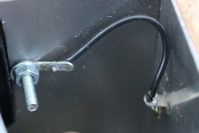
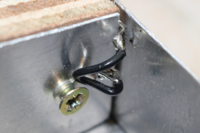
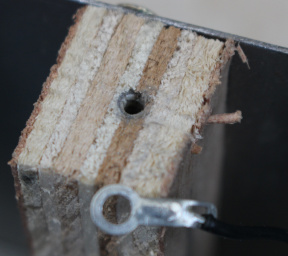
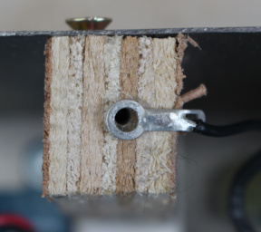
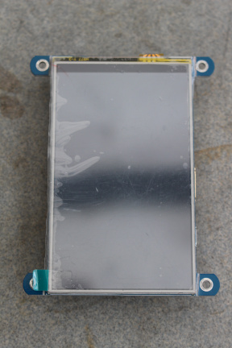
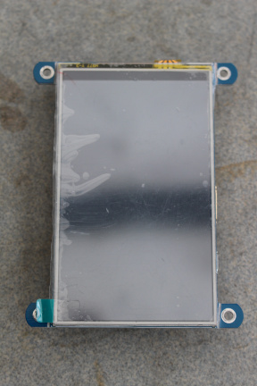

Pédale Vite v2 — Instructions de montage
Table des matières
- Introduction
- Fournitures
- Montage pas à pas
- Installation logicielle
- Préparation du système
- Démarrage et mise à jour système
- Configuration de base
- Optimisation du temps de démarrage
- Installation des dépendances logicielles
- Installation de Clang (facultatif)
- Installation de Pédale Vite
- Démarrage automatique de Pédale Vite
- Passage du système en lecture seule et autres optimisations
- Maintenance
- Amérliorations et variations envisageables
- Historique des versions
I. Introduction
Pédale Vite est une pédalier multi-effet pour guitare à fabriquer soi-même (DIY, do it yourself). Ce manuel détaille comment réaliser le montage et installer toutes les composantes nécessaires à son fonctionnement.
Ce projet est relativement complexe et modérément difficile, mais à la portée de tout le monde. Il n’est pas nécessaire d’avoir le bricolage dans le sang. Il ne nécessite pas d’adresse ou de compétence particulière. Les techniques utilisées (soudure, perçage, etc.) ne s’improvisent pas mais s’apprennent relativement rapidement.
Cependant la réalisation est relativement prenante et nécessite une dizaine de jours de travail environ. C’est approximativement le temps que j’ai passé au montage. Je suis loin d’être très organisé et encore moins adroit de mes dix doigts. Je suis sûr qu’une personne un peu bricoleuse peut réduire ce temps de moitié.
Il est préférable de lire les instructions dans leur intégralité avant de commencer, afin de se faire une idée plus précises des opérations et de leur ordre. Il n’y a pas beaucoup d’illustrations des étapes intermédiaires du montage, mais celles illustrant le pédalier (presque) fini devraient suffir à se faire une idée plus précise des placements et de la logique d’assemblage.
II. Fournitures
Les fichiers nécessaires se trouvent dans le dépôt GitHub du projet.
- Les schémas en
.pros’ouvrent avec KiCAD, utilisé ici en version 6.0.2. - Les dessins en
.dfxs’ouvrent avec LibreCAD, utilisé ici en version 2.2.0. - Les feuilles de calcul
.odss’ouvrent avec LibreOffice ou OpenOffice.
Certains documents ont été exportés en .png ou
.pdf pour un accès plus simple.
Plans
Les plans se trouvent dans le répertoire
doc
du dépôt.
- Le dossier
boardscontient les schémas électroniques (KiCAD) ainsi que les plans des ciruits imprimés des différentes cartes. drawing-panel.dxfdonne le plan de perçage des feuilles métalliques composant le boîtier.cables.odsfournit le plan de câblage. Chaque paire de lettre indique les broches à relier ensemble au moyen d’un fil électrique.
Ces plans ne sont pas exhaustifs. Par exemple, je n’ai pas encore fait figurer les câbles reliant le Pi à son alimentation, ou les câbles secteur. Toutefois ce sont des parties relativement simples qui ne nécessitent pas d’instruction détaillées.
Matériaux
La liste des matériaux utilisésse trouve dans le fichier
doc/bom.ods du dépôt.
Les composants sont décrits en fonction de leurs contraintes physiques et
qualitatives, assortis des d’un prix hors taxes indicatif.
D’ailleurs, en terme de prix, il est possible d’optimiser un certain nombre de
choses.
Certaines pièces sont issues de mes stocks venant de projets précédents et
peuvent avoir été achetées par lots surnuméraires.
En cherchant, on peut trouver des lots en quantités plus adéquates.
Il est tout à fait possible de prendre d’autres matériaux, pourvu qu’ils
soient compatibles ou adaptables.
Pour information, les résistances utilisées sont toutes des ¼ W de 6,2 mm de long au maximum, essentiellement pour des raisons d’encombrement sur le circuit.
Outillage
- Crayon à papier ou mieux, porte-mine pour pouvoir tracer à travers un trou de plaque
- Compas de précision ou forme permettant de tracer des cercles de 10, 11, 12 et 24 mm de diamètre si on utilise une fraise conique sans étage
- Réglet gradué
- Rapporteur
- Ciseau à bois
- Scie à bois
- Scie à métaux
- Lime à métaux, plate
- Lime à métaux à section arrondie (« queue de rat ») et aussi fine que possible (3–5 mm)
- Établi
- Paire de serre-joints
- Planches jetables (récupération de palette) pour support de perçage, guides, etc.
- Perceuse, si possible sur colonne
- Mèche bois 2 mm
- Mèches, cloches ou fraises coniques pour percer du 3, 4, 5, 7, 10, 11, 12 et 24 mm de diamètre dans de l’acier
- Pointeau ou vis pointue
- Mini-perceuse type Dremel
- Disques de tronçonnage pour acier (si possible plusieurs, petits et grands diamètres)
- Huile de coupe
- Jeu de clés plates ou éventuellement à pipe : 5, 5.5, 6, 10, 13 et 14 mm
- Tournevis plat
- Tournevis cruciforme ordinaire (PH2 et possiblement PH1)
- Marteau
- Fer à souder thermorégulé avec porte-fer (50 W mini)
- Fil de soudure 0.5 mm et 1 mm avec flux
- Pompe à soudure et éventuellement de la tresse à déssouder
- Troisième main
- Étau
- Éponge dédiée au nettoyage du fer
- Pinces à bec fin
- Pinces brucelles
- Pinces à couper les pattes de composants (pinces coupantes ordinaires O.K. mais moins pratiques)
- Pinces à sertir les petites cosses (les PA-09 de chez Engineer sont très bien)
- Pinces à sertir les cosses Faston 250
- Outil à dénuder de petit calibre
- Ruban adhésif isolant (« Scotch d’électricien »)
- Gants
- Lunettes de protection contre les projections
- Masque respiratoire contre la poussière
- Multimètre (mesure de résistance ou de contact)
- Oscilloscope (facultatif mais pratique)
- Markers pas trop gros clairs et foncés ou tubes de peinture avec pinceau fin
Cette liste n’est pas complètement exhaustive, n’y figurent pas tous les petits outils ou matériaux pouvant servir de leviers, cales ou de martyrs durant le montage. Ils peuvent être improvisés sur place en fonction de ce dont vous disposez et de vos habitudes ou techniques de bricolage. L’outillage à lui seul peut revenir assez cher. N’hésitez pas à vous faire prêter le matériel, ou à faire des achats collectif.
III. Montage pas à pas
Boîtier
Usinage
En premier lieu, protégez-vous le visage, les yeux et les mains avec les lunettes et les gants. Le masque sert aussi à se protéger contre l’inhalation des poussières. Si possible, portez des vêtements couvrants.
Découper la plaque de métal avec la scie à métaux ou avec un disque de tronçonnage monté sur la mini-perceuse. Dans ce dernier cas, utiliser une planche comme guide pour appuyer l’axe de l’outil afin de couper aussi droit que possible. Asperger la ligne de coupe d’huile de coupe afin d’éviter les échauffements et d’économiser les disques de tronçonnage.
Les plaques sont à découper aux dimensions suivantes :
- Façade (dessus) : 520 × 250 mm²
- Face arrière : 520 × 70 mm²
- Face avant : 520 × 30 mm²
- Dessous : 520 × 253 mm²
- Côtés: [30–70]×250mm² (trapèze rectangle)
Note : la face avant et le dessous peuvent être en aluminium car elles nécessitent moins de robustesse.
Une fois les panneaux coupés aux bonnes dimensions, ébavurer avec une lime de façon à arrondir les bords dans le sens de l’épaisseur.
Important : toutes les opérations se font sur la face intérieur de chaque panneau. Les plans sont tous des vues de l’intérieur.
Tracer ensuite les repères des perçages et découpes en fonction des plans. Tracer le contour des trous à percer à la fraise conique à l’aide d’un compas. Marquer le centre des trous avec un pointeau ou une vis bien pointue. Procéder ensuite au perçage. Pour les trous les plus gros, il peut être intéressant de faire un avant-trou afin de bien guider la mèche ou la fraise. Utiliser l’huile de coupe. Avec la fraise conique, arrêter la découpe quand on dépasse les contours tracés. Se munir de la pièce à faire rentrer dans le trou et essayer. Remettre un coup de fraise si c’est trop juste, ou limer.
Une fois les plus gros trous faits, ébavurer avec une fraise spéciale ou utiliser la mini-perceuse avec un disque de tronçonnage pour découper le métal qui dépasse.
Découper deux morceaux de 520 mm dans la cornière. Ils viendront faire la jonction aux angles supérieurs du boîtier. La partie la plus courte du L sera sur le dessus et la plus longue verticale. Si nécessaire, ronger la partie supérieure d’une des cornières avec la queue de rat afin de laisser la place pour les deux vis de l’écran.
{kind=link}
Découper deux autres morceaux de cornière de 250 mm qui serviront de renforts dans le sens de la profondeur. Une des cornière est enjambée par la carte son. Veiller à ce que celle-ci ne rentre pas en contact une fois en place. Il sera peut-être nécessaire de découper un morceau ; utiliser pour cela une lime si la quantité de matière à retirer est peu importante, sinon un disque de tronçonnage.
Serrer ensemble ces deux cornières de renfort avec la plaque. Percer d’un coup les trous traversant les deux.
Percer les trous restants à la perceuse et ébavurer au besoin. Sur le schéma, les petits trous sans diamètre indiqué font 3 mm de diamètre. Certains trous de fixation dépendent du matériel précis dont vous disposez : connecteurs, prise et interrupteur secteur, etc. Vérifiez que les trous donnés sont cohérent avec vos matéraux, ajustez-les le cas échéant.
Les trous des LED sont calibrés à 5 mm. Il est possible de les agrandir un peu à 6 mm tout en les descendant d’un demi-millimètre. Cela permet de descendre la LED à la surface du boîtier tout en la rendant rendant visible même sous incidence élevée.
{kind=link}
Nota bene: les trous pour fixer les montants latéraux et les piliers sont légèrement décalés aux angles afin que les vis puissent se croiser plutôt que se rentrer dedans. Les trous en bas des piliers sont clairement excentrés.
{kind=link}
Il peut être plus pratique de laisser de côté les trous qui traverseront les cornière longitudinales. Ils seront percés une fois les cornière placés sur le montage.
Découper les zones rectangulaires. Il peut être plus pratique de commencer par percer les coins avec une mèche de 3 mm, à 1,5 mm de chaque coin. Cette étape facilite la jonction des découpes. Couper les bords avec un disque de tronçonnage de petit diamètre. Enfin, limer les bords pour les arrondir et remettre les angles au carré.
Supports latéraux
Prendre une planche de 18 mm d’épaisseur, 20 mm tout au plus. Découper deux formes en trapèze rectangle de 250 mm de long et de largeurs 30 et 70 mm. On peut vérifier que le dernier bord fait bien 253 mm. Les angles droits sont sur le dessus du pédalier.
À l’aide d’une scie et de ciseaux à bois, découper sur les montants
les trous pour faire passer les connecteurs du Pi ainsi que les contrôles
de gain de la carte son.
Se référer aux plans pour les placements, layer Structure.
{kind=link}
Percer ensuite les plaques métalliques latérales, positionnées côté intérieur, et les visser.
Visser sur les deux formes latérales les panneaux du dessus, avant et arrière. Utiliser des vis à bois de 3 mm, pas trop longues. Elles peuvent être auto-perforantes ou simples. Dans ce cas, il vaut mieux prépercer les trous avec une mèche de 2 mm. Placer la plaque sur les montants afin de repérer précisément les-dits trous.
Placer les deux cornières longitudinales aux angles, et bien les plaquer avec des serre-joint. Percer les trous traversant les cornières, les plaque et le bois avec une mèche de 2 mm. Repasser sur le métal uniquement avec une mèche de 3.
Il est possible de percer tous les trous des cornières, même ceux qui tiendront les piliers centraux. Ajouter les dernières vis des montants, ainsi que de courtes vis (8 à 10 mm) avec écrou et rondelle pour attacher la plaque du dessus aux cornières.
Piliers centraux
Les piliers centraux vont servir d’appui aux deux renforts fabriqués à partir des cornières. Commencer par visser ces derniers à la plaque du dessus si ce n’est pas encore fait. Découper ensuite des piliers de 18 à 20 mm de section carrée dans du bois solide. On peut pafaitement reprendre des chutes de la planche ayant servi aux supports latéraux.
La forme verticale des piliers (vus de côté) est légèrement trapézoidale. La forme biseautée (9°) se trouve du côté du sol, la différence de longueur entre les deux faces est d’environ 3 mm.
Couper deux piliers de 30 et 33 mm pour la face avant, et deux piliers de 67 et 70 mm pour la face arrière. Déduire de ces longueurs l’épaisseur de la cornière, de façon à ce que les montants et les piliers arrivent au même niveau. D’un autre côté, ne pas hésiter à allonger d’un demi-millimètre cette longueur, quitte à la réajuster à la rappe plus tard, en situation.
Placer chaque pilier sur le montage, percer le trou dans le bois et visser. Poser ensuite à plat le montage et vérifier qu’il n’est pas bancal. Limer au besoin les pieds un peu trop longs.
Ensuite, l’épreuve du feu : poser le boîtier au sol et monter dessus. Il ne doit pas se déformer ou donner des signes de faiblesse.
Électronique
Les cartes
Les cartes principale, carte audio et convertisseur
2 × 15 V sont des PCB que vous pouvez faire fabriquer
à l’aide des fichiers Gerber situés dans les sous-répertoires de
doc/boards.
Il est aussi possible de récupérer des restes de mes plaques à prix
coûtant, me contacter directement si vous êtes intéressé·e.
Pour les autres cartes, découper les rectangles suivants dans la plaque de prototypage :
- 19 × 18 trous entiers, soit 48,3 × 45,7 mm², carte de l’alimentation 5 V
- 20 × 13 trous entiers, soit 50,8 × 33,0 mm², carte des boutons de navigation
- 18 × 4 trous entiers, soit 45,7 × 10,1 mm², carte des diodes
- 18 × 4 trous entiers, soit 45,7 × 10,1 mm², carte des codeurs incrémentaux de navigation
- 48 × 3 trous entiers, soit 121,9 × 7,6 mm², carte des codeurs incrémentaux de paramètres
Les plaque de prototypage standard font 61 trous sur 38. Il est donc possible d’extraire toutes les cartes d’une seule plaque. On peut prendre des plaques à bandes ou à pastilles, ces dernières étant probablement plus pratiques pour les circuits à réaliser.
On peut utiliser une simple scie à métaux, qui fait très bien l’affaire. Immobiliser la plaque sur un établi avec un étau ou un serre-joint, en la coinçant entre deux planchettes de bois pour ne pas l’abîmer. La découpe se fera au milieu d’une rangée de pastilles, pour profiter des trous existants.
Percer des trous de fixation aux endroits indiqués sur le fichier de PCB
(doc/boards/misc-boards/misc-boards.kicad_pcb) à l’aide d’une
mèche de 3 mm.
Sans perceuse à colonne, il est préférable de percer au centre d’une pastille,
là ou le petit trou fait office de guide.
Chaque trou sera fait au milieu d’un carré de 3 × 3
pastilles, sur lesquelles aucun câblage ne pourra être fait.
Après le découpage de la carte des LED, il faut fabriquer le support avant de souder les composants. Voir plus bas.
Il est aussi possible de faire graver ces cartes sous forme de PCB en
extrayant et exportant les PCB « secondaires » de
doc/boards/main-board.
Toutefois ces cartes sont très simples et je ne pense pas qu’il soit
intéressant de les faire fabriquer.
Soudure des PCB
Carte principale
Souder les composants par ordre de hauteur. D’abord les résistances à plat, puis tous les condensateurs céramique situés hors des supports à circuits intégrés.
Vérifier ensuite que les supports et les condensateurs internes peuvent cohabiter sans problème. Le cas échéant, raboter à la lime le plastique des supports afin que tout rentre correctement sans forcer. Il est possible d’incliner les condensateurs ou de les déporter légèrement, jusqu’à une certaine limite.
Souder ensuite les supports, puis les condensateurs internes. Ensuite les résistances verticales, puis les transistors. Viennent enfin les connecteurs HE10, Dupont et NSK254.
Ne posez pas tout de suite les puces dans leur support, il y des vérifications à faire avant, voir plus bas.
Carte audio
Cette carte demande une certaine attention. En effet, il y a deux composants montés en surface (CMS), le codec CS4272 et l’horloge MK2703. Le CS4272 est particulièrement délicat puisqu’il s’agit d’un boîtier TSSOP, aux pattes très fines (0,63 mm de pas). Ces deux composants sont à souder en premier. Il vous faudra du fil à soudure fin (0,5 mm), et en fonction de votre acuité visuelle, peut-être une loupe ou un microscope. Un très bon éclairage est nécessaire dans tous les cas.
Il existe diverses techniques de soudure de ce type de composant, impliquant généralement de commencer par souder deux pattes pour immobiliser la pièce, puis de souder le reste. Il existe de nombreux guides en photo ou vidéo pour la soudure manuelle de puces CMS. La technique par innondation de soudure marche relativement bien, mais demande un minimum de pratique pour être propre et efficace. N’hésitez pas à vous entraîner au préalable sur des plaques-adaptateurs avec des puces bon marché qui pourront être sacrifiées sans regret. Sinon revenez à la technique la plus simple, patte par patte. Le plus gros risque est de faire couler de la soudure sous la puce, derrière les pattes et de les court-circuiter sans qu’il ne soit possible de revenir en arrière. En cas de problème, il est quasiment impossible de déssouder la puce sans l’endommager (mécaniquement ou thermiquement) et de recommencer, sauf si vous disposez d’un pistolet à air chaud adapté.
Si vous ne vous sentez pas suffisamment en confiance pour l’opération, confiez-la à une personne expérimentée ou professionnelle. Toutefois, ce n’est pas si difficile, cette carte fut ma première expérience de soudure de puce TSSOP et elle fonctionne très bien.
{kind=link}
Après avoir soudé les puces CMS, on soude les composants dans leur ordre de hauteur : les petites diodes type 1N4448, les résistances, les diodes plus grosses type Schottky, les condensateurs céramique, les supports de circuits intégrés, les condensateurs film, les connecteurs Dupont et supports tulipe pour transistors et régulateurs, les selfs, la ferrite, et finalement sans ordre prédéfini, les condensateurs électrolytiques, le régulateur 5 V, le connecteur NSK254 de l’alimentation.
Placez le quartz dans cette liste en fonction de sa taille, mais avant de souder celui-ci, assurez-vous qu’il y a un espace entre le composant et le PCB. Vous pouvez intercaler un morceau de carton pour assurer l’écart et le retirer une fois la soudure effectuée. Attention à ne pas le faire trop chauffer, il pourrait brûler.
Les transistors Q1–Q3, la référence de tension D9 et le régulateur IC4 sont montés sur support tulipe plutôt que soudés directement.
Positionner les self de façon à ce qu’elles soient à moitié debout, l’une en face de l’autre pour chaque canal d’entrée, formant un angle droit.
Une fois que tout est soudé, fixer le radiateur sur IC3.
Enfin, insérer un cavalier sur JP1 pour sélectionner le bit de poids faible de l’adresse I²C de la carte. Le mettre entre les broches 2 et 3 pour l’adresse 0, attendue par la partie logicielle.
{kind=link}
Comme pour la carte principale, ne pas placer tout de suite les puces dans leur support.
Carte de conversion 15 V alternatifs vers continu
Pas grand-chose à dire sur cette carte qui alimente la partie analogique de la carte son. Ne pas oublier de fixer les radiateurs sur les régulateurs de tension. Les self L1 et L2 sont à incliner de façon à ce qu’elles forment un angle à 90°.
{kind=link}
Soudure des plaques de prototypage
Pour toutes les cartes : côté composants, commencer par placer sans les souder les principaux composants à l’aide du schéma PCB. En marquer le tour au crayon à papier. On obtient ainsi des repères pour les placements.
Création des pistes
Pour connecter les composants entre eux sur une plaque à pastilles, il peut
être nécessaire de créer des pistes, côté cuivre.
Ces pistes apparaissent sur les schémas en vert (calque B.Cu,
back copper layer dans KiCAD/Pcbnew).
Pour m’aider, j’ai pris une capture d’écran du schéma de montage, qu’on voit
habituellement côté composants.
Avec un éditeur d’images, je l’ai retournée en miroir dans le sens horizontal
afin d’avoir le plan de câblage dans le bon sens.
Pour créer la piste, on peut utiliser des ponts avec de la soudure, ou prendre du fil de cuivre nu. Dans ce cas utiliser plutôt du fil monobrin, préférablement étamé, ce sera plus facile. On peut aussi réutiliser des chutes de pattes de composants, ce qui est sûrement la solution la plus judicieuse ici.
Avec du fil monobrin, dérouler un peu de câble. Tirer dessus avec une pince d’une main et la bobine dans l’autre main jusqu’à ce qu’une légère élongation se fasse sentir ; arrêter immédiatement pour éviter de rompre le fil. Il devrait alors être bien droit. En couper un peu plus que la longueur désirée.
Pour le poser le fil de piste, partir de la pastille libre la plus proche, faisant partie du trajet. À l’aide d’une pince, plier l’extrémité du fil sur 1 ou 2 mm de façon à faire un petit crochet qui rentrera dans le trou d’extrémité. Plier ensuite le fil pour effectuer le chemin désiré. Pour mesurer les sections de la piste, s’aider d’un gabarit, par exemple en prenant les chutes de la plaque pour s’en servir de règle graduée en pastilles. Quand le chemin est complexe, on peut faire un contrôle de temps en temps en posant la piste sur la plaque et en ajustant. À la fin, refaire un crochet, faire les derniers ajustements et couper le bout excédentaire.
Bien regarder ce qui passe sur le trajet, il peut être nécessaire de s’écarter un peu du centre des pastilles pour laisser la place à des pattes de composant. De même, éviter de faire partir le fil directement de l’emplacement d’une patte, la soudure à cet endroit empêchera l’insertion du futur composant sans compter qu’il n’y aura peut-être pas assez de place pour les deux.
Souder aux extrémités et aux angles. Rajouter des points de soudure sur les portions un peu longues, pour consolider.
Lors de la soudure des composants, il faudra faire un petit pont pour relier la piste à la patte du composant.
Fils de connexion côté composants
Certaines plaques ont besoin d’avoir des fils de connection, côté composants. Prendre du fil isolé et le dénuder sur 2–3 mm auparavant. Coincer le fil dans la plaque avec une pince crocodile. Ne pas mordre directement à l’emplacement de la soudure. Faire plutôt une sorte de U renversé en plaquant le fil un peu plus loin et en le faisant rentrer verticalement. En gros, la pince doit exercer sur le fil une pression verticale légère pour le maintenir contre le trou et tenter de le faire rentrer plus loin (il est bloqué par sa gaine). Quand le fer va chauffer le fil, l’isolant va se rétracter un petit peu et le fil va avancer. Cette méthode permet d’avoir la gaine qui descend aussi bas que possible, ce qui est nécessaire pour éviter les court-circuits entre plusieurs fils plantés les uns à côté des autres.
Carte d’alimentation 5 V
Souder les borniers puis le bloc d’alimentation. Relier les pattes en soudant des fils de cuivre nu ou en posant de grands ponts de soudure. Se référer au schéma de PCB pour placer ces pistes.
Certaines pistes et broches (J501 et les broches 1 et 2 du bloc) véhiculent des tensions secteurs. Il sera nécessaire de gratter soigneusement le cuivre autour de ces pistes sur au moins une pastille de large (2,5 mm) afin d’éviter toute possibilité de court-circuit. Une mini-perceuse munie d’une petite fraise arrondie est parfaite pour ce travail. Bonus : recouvrir ces pistes et broches de vernis.
De même, faire attention aux trous de montage. Veiller à ce que les écrous, rondelles et entretoises restent suffisamment éloignées des pistes secteur.
Carte des boutons de navigation
Sur cette carte, les boutons sont sur le côté cuivre et le connecteur côté composants. Il y a deux approches possibles. La première consiste à utiliser le cuivre de la carte pour y faire certaines connexions, la masse par exemple. Cette option est relativement simple si on utilise une Veroboard plutôt qu’une plaque à pastilles ; il suffit de couper les pistes aux bons endroits. C’est la solution que j’ai retenue car je disposais de chutes de Veroboard. Dans le cas d’une plaque à pastilles, il faut constituer des pistes en ajoutant du fil de cuivre nu ou des ponts de soudure. Ces éléments conducteurs vont alors se retrouver sous les boutons. Veiller à ce que les boutons, une fois en place, reposent de manière stable et horizontale sur les pistes. De plus, il faudra veiller à laisser des trous ouverts pour insérer les pattes de ces boutons, ce qui peut être compliqué.
La deuxième option consiste à tout câbler côté composants avec du fil isolé. Dans ce cas, commencer avec les éléments près du connecteur, car le câblage va devenir assez dense à cet endroit.
Souder les boutons rangée par rangée, un par un, par le dessus. Souder entre deux boutons peut être un peu délicat, faire attention à ne pas faire fondre le plastique en baladant le fer. Veillez à ce que les boutons soient bien plaqués à la carte lors de la soudure. En effet, ils vont devoir encaisser des pressions importantes et régulières, et cela ne doit pas faire travailler les soudures.
Il n’est pas nécessaire de relier toutes les pattes. Chaque bouton en a quatre, elles sont reliées deux à deux en interne, constituant deux uniques pôles. Il suffit de souder et de connecter une patte de chaque pôle. En fonction de la solution de connexion retenue, souder les câbles au fur et à mesure, ou après soudure de l’ensemble des boutons. À vous d’évaluer ce qui va être le plus pratique à faire. Sur le connecteur, il n’y a que deux pattes de masse pour les six boutons, il vous faudra donc faire des dérivations.
{kind=link}
Ici, une plaque à bandes (Veroboard) a été utilisée pour simplifier le câblage.
Les fils sont soudés des deux côtés pour des raisons pratiques.
Cartes des codeurs incrémentaux
Comme pour les boutons, la soudure des codeurs se fait côté cuivre. Idéalement il faudrait fixer les codeurs sur la plaque de façade et les souder une fois en place. On s’assure ainsi que le positionnement est bon par rapport au perçage. Cependant l’espace entre les codeurs et la plaque est réduit, ce qui peut rendre la manipulation ardue.
S’il est trop compliqué de faire ainsi, souder les composants au mieux, puis vérifier le placement sur la façade. Si nécessaire, agrandir avec une lime de section arrondie les trous qui nécessitent un réajustement.
Faire la liaison entre les connecteurs et les codeurs à l’aide de ponts de soudure. Pour les deux codeurs à boutons, ajouter côté composants des fils isolés reliant le connecteur aux deux bornes de l’interrupteur.
{kind=link}
{kind=link}
Carte des LED
La carte des LED est un peu spécifique car d’une part elle est double face et d’autre part elle est accompagnée d’un support.
Le support sert à retenir les LED. Il est plaqué contre la façade, par le dessous. Compte tenu des dimensions des LED que j’ai utilisées, le support doit être une plaque d’environ 2 mm d’épaisseur. Ici, j’ai pris un reste d’aluminium de 2,5 mm. Cependant ces LED au format plat semblent difficiles à trouver aujourd’hui. Si les vôtres sont plus hautes (c’est le cas des LED standard), on peut prendre une plaque de 3–5 mm. L’essentiel, c’est que les LED ne dépassent pas du boîtier, ou à peine. Elle peut être en bois, en plastique ou dans n’importe quel autre matériau suffisamment robuste. Ses dimensions doivent correspondre à peu près à celle de la carte. Elle peut être plus grande, mais il faudra veiller à ce qu’elle ne rentre pas en collision avec un autre élément du boîtier.
Une fois le support prêt, attacher la carte dessus avec un serre-joint, le côté cuivre. Percer les trous de fixation. Ce procédé garantit que les trous seront bien en face les uns des autres. Puis, en maintenant carte et support attachés, marquer sur ce dernier à l’aide d’une mine les trous dans lesquels seront placées les pattes des LED.
Détacher le support et marquer le centre de chaque LED. Percer les trous d’accueil de ces LED, d’un diamètre de 5 mm. Il faut être précis car en terme d’esthétique, le moindre écart va être visible. Vérifier ensuite l’alignement avant et après perçage avec le panneau du dessus du boîtier.
On passe ensuite les LED sur le circuit, toujours sans les souder. On assemble tout : la plaque dans laquelle on coince la tête des LED, le circuit qui leur tient les pattes, et les boulons avec leur entretoise qui maintiennent les deux supports à distance suffisante.
Il faut choisir les entretoises pour laisser de la place entre le circuit et la base de la tête des LED. En effet, les LED sont fixées côté pastilles, et à moins d’avoir une plaque double face, il faudra souder de ce côté, entre la plaque et les têtes. Des entretoises de 5 mm conviennent bien, mais on peut aussi en prendre de 10 mm si la soudure par l’intérieur semble trop difficile. Au besoin, ajuster la hauteur avec des rondelles. S’assurer également de disposer de vis de longueur suffisante, en comptant les épaisseurs du panneau et des diverses rondelles.
Bien aligner les LED avant de les souder. Une fois les LED fixées, on peut démonter la plaque. Souder les pistes et le reste des composants. On peut aussi faire les opérations dans l’ordre inverse, ça n’a pas vraiment d’importance.
{kind=link}
{kind=link}
Test des connexions
Avant de fixer les circuits intégré, il faut tester les connexions. Utiliser un multimètre en mode testeur de fils ou ohm-mètre. C’est important de le faire avant de fixer les circuits ingégrés ou les connecteurs, parce que les circuits peuvent avoir des contacts internes qui vont venir fausser les mesures.
Avoir devant soi un plan récapitulant les broches de chaque connecteur. Pour chacun d’entre eux, vérifier les choses suivantes :
- Pour chaque broche de masse, vérifier qu’aucune autre broche n’est en contact avec elle, sauf peut-être d’autres broches de masse.
- Idem pour les broches d’alimentation, vérifier sur les supports des circuits intégrés que ces broches aboutissent bien. On retrouvera tout de même des connexions avec d’autres broches via les résistances de tirage (pull-up). Vérifier que ça arrive sur les boutons, et vérifier les résistances indiquées.
- Pour chaque paire de broches voisines, vérifier qu’il n’y ait pas de contact, ou alors que les résistances indiquées soient cohérentes.
- Quand il y a deux paquets de soudure suspects l’un à côté de l’autre sur la plaque, vérifier qu’ils ne sont pas en contact.
- Pour les autres broches type GPIO, vérifier qu’elles sont connectées aux bonnes broches sur les supports ou connecteurs.
- En bonus, on peut trituer les fils isolés lors des tests pour vérifier que la connexion ne bouge pas.
Ces tests ne donnent certainement pas une garantie de fonctionnement, mais s’ils sont fait rigoureuseuement, permettent de débusquer la grande majorité des erreurs et minimisent les risques de court-circuit.
Une fois les vérifications effectuées, on peut insérer les circuits intégrés. Sur ceux en boîtiers DIP, les pattes ne sont pas tout à fait verticales et ne rentrent pas telles quelles dans les supports. Il faudra donc achever de les plier. Cela peut être fait patte par patte, ou d’un seul coup en prenant le composant dans un étau à l’horizontal et en serrant très précautionneusement les mors pour rendre les pattes bien droites.
Câblage
Pour relier le Pi et la carte principale, on peut prendre une nappe IDE à l’ancienne, qui sont des HE10 de 40 broches. Il y a souvent un détrompeur qui bouche un des trous, il suffit de le percer avec une pointe type couteau ou ciseaux. La broche femelle apparaît derrière. On peut vérifier avec un multimètre et deux broches mâles que la connexion se fait bien entre les deux trous débouchés. Attention, il faut que ce soit une nappe de 40 fils, et surtout pas les nappes plus récentes Ultra-DMA de 80 fils. Leurs connexions ne sont pas équivalentes, et parfois même un fil est coupé. En terme de connexion, le fil qui se trouve du côté de la carte micro-SD sur le Pi doit aboutir côté gauche sur la carte principale (le repère coloré indique la première broche).
Pour les autres câblages, se reporter à la feuille de calcul qui indique qui est connecté avec qui (chaque lettre identifie un fil), avec quel type de connecteur, et quelle longueur de câble est nécessaire.
Vous pouvez entortiller les câbles à plusieurs conducteurs. Attention cependant, plus l’entortillement est prononcé, plus le câble se raccourcit.
Certains connecteurs disposent de détrompeurs, il convient donc de faire attention à ce que la partie femelle soit orientée de la même façon que la partie mâle. En revanche, les connecteurs Dupont ne sont pas orientés, et c’est au branchement qu’il faut faire attention à l’orientation. Peindre une tache de couleur sur un des angles de chaque connecteur mâle et femelle afin de faire la correspondance facilement.
Certains câbles peuvent avoir des fils qui se croisent, faire bien attention au brochage.
Le câblage de l’écran est spécifique, puisque trois prises sont interconnectées.
Les boutons et pédales partagent quelques fils de masse. Préparer les câbles en les sertissant d’un seul côté. Ils seront soudés et connectés plus tard.
Câblage audio et masses
Les connexions audio doivent utiliser du câble blindé à double conducteur, en plus du blindage. Le blindage doit être relié à la masse (voir plus bas). Les câbles multi-conducteurs qui n’ont pas de masse, comme ceux des potentiomètres de gain, doivent êtres entortillés. De manière générale, utiliser un câblage aussi court que possible afin de limiter l’exposition aux parasites.
Pour éviter les boucles de masses et les ronflettes induites, les masses des circuits sont câblées en étoile, ou au pire, en arborescence. Les liaisons entre différentes « sections » de masse doivent être uniques. Sinon, cela forme des boucles.
Dans Pédale Vite, les masses sont organisées de la façon suivantes :
- La carte audio dispose de deux plans de masse indépendants. L’une correspond au circuit analogique, l’autre au circuit numérique. Ces deux masses ne devraient être connectées qu’en un seul point, le cavalier JP2.
- La masse de la partie analogique doit être connectée à l’extérieur uniquement par la première entrée (gauche) de la partie jack du combo jack-XLR. Les fils de masse de tous les autres connecteurs doivent être débranchés à une de leur extrémité. Ils doivent cependant y rester connectés en un point, car la liaison à la masse assure l’efficacité du blindage.
- Les masses des autres connecteurs audio sont connectées au chassis, soit naturellement dans le cas des prises jack non-isolées, soit en soudant la broche de masse à la broche en contact avec le chassis dans le cas des combo en plastique. Ceci est aussi valable pour la partie XLR du combo de la première entrée.
- Toutes les alimentations sont isolées et n’induisent pas de liaison explicite à la masse ou à la terre.
- La terre venant de la prise secteur est reliée au chassis, et donc à la masse. Idéalement il faudrait faire courir un fil allant se brancher sur la masse de première entrée audio afin de respecter la topologie en étoile, mais on peut considérer que la façade arrière du boîtier comme un plan de masse, elle est suffisament conductrice. On pourra donc connecter la terre au boîtier au niveau de l’une des vis de la prise secteur, via une cosse.
- Les différents panneaux du boîtier doivent être interconnectés. Il est possible que les cornières en aluminium soient anodisées, et donc isolantes. Il faudra donc assurer la liaison entre tous les panneaux avec du fil et des cosses insérées sur les vis, coincées par les écrous. Il faudra éventuellement creuser un des piliers centraux afin de faire passer la cosse qui fera contact avec la plaque du dessous.
- La masse de la carte principale est reliée à celle du Pi par le connecteur 40 broches. Cette masse est propagée à l’écran et à la partie numérique de la carte son. Les commutateurs sont isolés.
- Ne souder qu’une des extrémités des fils de masse des connecteurs jack des pédales d’expression, car ils sont déjà reliés à la masse globale par le boîtier.
- Les cartes dont les plans sont livrés ici ainsi que celle du Pi sont isolées au niveau des trous de fixation, ce qui ne provoque pas de liaison entre masse et boîtier. Ce n’est malheureusement pas le cas de l’écran. Il sera donc nécessaire de couper le plan de masse au niveau de chaque « oreille » de fixation, des deux côtés du PCB. Utiliser pour cela un cutter bien affûté ou l’angle d’une lime. Vérifier au multimètre que chaque oreille se retrouve bien isolée.
- L’écran a une double connexion avec le Pi : une directement par le câble HDMI, qui véhicule une masse, et l’autre par les câbles d’alimentation et de signaux pour le capteur tactile (via la carte principale). Là aussi une masse est véhiculée, il est préférable de ne pas la connecter.
- Sur la carte son, les deux masses analogique et numérique ne sont pas explicitement reliées. Il est possible de le faire avec un cavalier au niveau de JP2, situé près du connecteur d’alimentation. Une fois que tous les éléments seront installés dans le boîtier (voir plus bas), tester avec un multimètre le contact entre les deux broches de JP2. S’il n’existe aucun contact stable (il y a tout de même un condensateur d’évacuation des hautes fréquences qui peut perturber le multimètre) — et ce devrait être le cas, ajouter le cavalier. Sinon, laisser JP2 sans cavalier.
Ces considérations devraient permettre d’obtenir une masse sans boucle.

{kind=link}
{kind=link}
Ne pas faire attention aux résistances qui ont été soudées par goût de l’expérimentation.
{kind=link}
{kind=link}
{kind=link}
 
{kind=link}
{kind=link}
 
{kind=link}
{kind=link}
{kind=link}
 

{kind=link}
Alimentation du Pi
Le Raspberry Pi 4 s’alimente par une prise USB-C ou par le GPIO. Nous allons l’alimenter par l’USB-C, la nappe reliant le GPIO n’étant probablement pas suffisamment robuste pour véhiculer les 3 A nécessaires à son fonctionnement.
Étant donné qu’il est très difficile de trouver une fiche USB-C à câbler soi-même, nous allons prendre un cordon d’alimentation USB-A vers USB-C et le couper. Il suffit de conserver une quinzaine de cm depuis la prise USB-C.
Il s’agit ensuite d’identifier les conducteurs. Récupérer l’autre morceau du câble, celui qui se termine par la prise USB-A, car cette prise est plus grosse et il sera plus aisé d’en tester les broches. Vu de face, les broches du connecteur orientées vers le haut, le pôle négatif de l’alimentation se trouve tout à gauche, et le positif tout à droite. En premier lieu, il y a de grandes chances que le blindage soit relié au pôle négatif. Pour le pôle +5 V, tester la continuité entre chaque fil et la broche. Ne pas se fier à la couleur des isolants.
{kind=link}
Une fois que les deux fils sont repérés, les dénuder sur 3 mm. Les sertir de petits embouts de câblage si vous avez le matériel nécessaire, car ces fils sont souvent assez fins et risquent de mal tenir dans les borniers. Sinon, dénudez plus de fils et faite un pliage avec le conducteur de façon à avoir plus de matière. Replier les éventuels autres fils le long du câble et les y attacher avec du ruban adhésif isolant.
Enfin, connecter le câble au bornier de la carte 5 V en respectant la polarité.
{kind=link}
Assemblage
Premier assemblage
On peut maintenant fixer au boîtier la plupart des éléments : cartes, prises, interrupteurs… Comme le Pi est positionné très près du panneau du dessus et que son PCB est relativement flexible, il est nécessaire de couper à ras les pattes de ses connecteurs USB et RJ45, qui sont plus proéminents que le reste. Le lecteur de carte micro-SD est également proeminent. Son enveloppe est reliée à la masse et ne pose donc pas de problème, mais elle risque de provoquer une boucle de masse si elle rentre en contact. Pour éviter tout risque, tapisser l’endroit qui accueillera le Pi avec du ruban adhésif isolant.
{kind=link}
Dans le même ordre d’idée, il faudra recouvrir d’isolant la partie de la cornière située juste en-dessous de la carte son.
De même, il sera nécessaire de recouvrir d’isolant la plaque du dessous au niveau du transformateur torique. En effet, s’il se formait une boucle conductrice traversant le tore, ce serait l’équivalent d’une spire en court-circuit et cela peut mettre en danger le transformateur.
{kind=link}
En parlant de transformateur, j’ai jugé nécessaire d’ajouter une grosse rondelle sur la vis d’attache, pour éviter qu’un jour celle-ci ne traverse la plaque sous le poids du transfo.
{kind=link}
Hauteur des entretoises nécessaires pour chaque carte :
- LEDs : 5–10 mm
- Boutons de navigation : 10 mm
- Écran : 4 mm
- Alimentation 5V : 5 mm
- Raspberry Pi 4 : 3 mm
- Carte son : 12–13 mm
- Carte principale : 5 mm
- 2 × 15 V AC → DC : 5 mm
Il est sans doute préférable de ne pas monter le Pi définitivement à cette étape. En effet, pour installer le logiciel il sera nécessaire d’accéder à la carte SD qui deviendra difficilement accessible une fois que tout sera monté.
Câbles d’alimentation
Glisser préalablement un fusible dans la cartouche, plus un de rechange. Commencer par vérifier avec un multimètre le brochage de la prise secteur et de l’interrupteur. Il s’agit d’établir qui est en contact avec qui et dans quelle position.
Pour cette partie, prendre du câble électrique multibrin conçu pour le secteur. Les puissances véhiculées ne sont pas très fortes, mais il faut tout de même une épaisseure minimale d’isolant.
Il y a plusieurs câbles à réaliser : deux pour relier la phase et le neutre entre la prise et l’interrupteur, un pour relier la terre au boîtier, et deux pour relier l’interrupteur au module d’alimentation 5 V. Le transformateur 15 V dispose déjà de ses câbles, qui devront être branchés sur l’interrupteur également. Les broches sortant de l’interrupteur devront donc accueillir deux câbles en dérivation, l’un vers le module 5 V, l’autre vers le transformateur.
Si vous disposez du matériel permettant de sertir des cosses Faston, couper les câbles aux dimensions requises et les sertir. Ne pas oublier de prendre les deux câbles dans la cosse pour les sorties d’interrupteur.
Une fois les cosses attachées, ajouter un boîtier isolant. Il pourra être nécessaire de légèrement plier les bornes mâles pour éviter de toucher le fond du boîtier.
{kind=link}
Sans cosses Faston, il faudra souder les câbles. Penser à glisser avant soudure deux voire trois morceaux de gaine thermo-rétractable par contact soudé afin de ne pas laisser exposé de conducteur secteur (sauf terre).
Fixer les deux sorties du transformateur dans les borniers de la carte 15 V. Ces deux sorties doivent être branchées en série et avec la même polarité. Sur le circuit, les deux borniers centraux sont connectées ensemble. En cas de doute, tester le transformateur avec un multimètre. Si la tension en série est nulle ou presque, inverser un des deux circuits.
Soudure des câbles des interrupteurs
Il y a moins de fils de masse qui sortent des connecteurs que de fils véhiculant du signal : quatre pour les pédales et deux pour les boutons de l’interface d’utilisation. Souder les fils de masse aux interrupteurs les plus proches du connecteur et passer la masse de proche en proche en soudant des fils intermédiaires.
Les interrupteurs des pédales demandent un traitement attentif et délicat. En premier lieu, si on utilise des DPDT, il faut partir du principe que la position de contact de chaque interrupteur est unique. Il n’y a pas de marque ou de signe distincif fiable donnant une orientation. La cosse commune (masse) est au centre et c’est tout ce que l’on sait. Il faut tester individuellement chaque interrupteur à l’aide d’un multimètre pour connaître la paire de broche correspondant à un contact en position enfoncée.
D’autre part, si le modèle d’interrupteur donné dans la liste de matériaux est plutôt robuste, fiable, et sans problème de montage ou de soudure, en revanche certains autres modèles peuvent se révéler assez fragiles. Dans ce cas, lors du vissage il faut faire attention à ne pas trop appuyer sur le boîtier plastique car celui-ci peut se disloquer ou se détacher. Lors de la soudure, ce même boîtier plastique peut se ramollir et fondre car la masse de métal du connecteur est importante et nécessite un apport de chaleur significatif. Si jamais la patte bouge dans le boîtier ramolli, le contact peut être foutu. Il faut alors déssouder le tout et retenter sa chance sur la deuxième voie. Tester une nouvelle fois au multimètre le fonctionnement de l’interrupteur une fois les soudures correctement effectuées.
Quand tous les fils des interrupteurs sont soudés, on peut les regrouper par connecteur.
{kind=link}
Derniers ajustements et fermeture
Finir de brancher les câbles. Tous.
{kind=link}
Ne pas faire attention à l’inversion des fils bleu et vert sur le connecteur audio. Il y avait une erreur dans le prototype de la carte.
{kind=link}
Personnellement, je n’ai pas monté les potentiomètres et boutons de gain de la carte son car je n’en ai pas besoin pour l’instant. À la place, j’ai utilisé des cavaliers pour sélectionner le niveau microphone plutôt que ligne sur la prise XLR, et fixé le gain global avec une résistance.
{kind=link}
Pour un gain d’entrée voulu, la résistance en ohms est donné par la formule suivante :
R = 2000 / (Glin − 1) = 2000 / (10GdB/20 − 1)
Où Glin représente le gain linéaire et GdB le même
gain exprimé en décibels.
Pour un gain unitaire, il faudrait une résistance infinie et donc laisser les
connecteurs Gain pot sans rien dessus.
Dans la pratique, il est plus judicieux de ne pas dépasser 10 kΩ afin
de ne pas introduire trop de bruit thermique.
Pour fixer la résistance, il suffit de sertir ses deux pattes avec des fiches femelle Dupont et de les introduire dans un boîtier.
{kind=link}
{kind=link}
{kind=link}
Quand tout est prêt et que le boîtier peut être fermé, ajuster la cosse de masse de la plaque du fond pour qu’elle tombe au-dessus (ou en-dessous ?) du trou dans le pilier. Poser la plaque. Insérer des vis de 40 mm dans les pieds en gomme et les visser sur dans les piliers et les angles sans trop forcer. Le pied en gomme ne doit plus être libre de tourner, n’allez pas au-delà. Soyez soigneux avec ces vis (ou plutôt les pas de vis des trous) car il est possible que vous ayiez à les enlever et les remettre de nombreuses fois pour faire les derniers ajustements et plus tard, de la maintenance. Je vous conseille d’ailleurs de ne pas fermer le boîtier tant que le pédalier n’est pas parfaitement opérationnel, et de retirer le Pi pour l’installation logicielle.
{kind=link}
{kind=link}
Si au cours de vos tests vous vous rendez compte que vous avez inversé des pédales, des boutons, des sens de rotation des codeurs incrémentaux, il est toujours possible de les inverser soit au niveau des câbles (il est facile de substituer deux fils sur un connecteur), soit au niveau du logiciel.
Note : le Pi 4 est connu pour chauffer beaucoup. En cas de charge de calcul trop importante, des dispositifs internes de protection thermique peuvent s’activer et réduire sa vitesse. Dans le cas de Pédale Vite, toute la puissance du processeur n’est pas utilisée. En pratique, la température interne reste toujours en dessous de 65 °C, selon des tests effectués à 17 °C de température ambiante avec une charge très importante, à la limite de la stabilité (90 % d’occupation). On peut extrapoler que jusqu’à 40 °C, il n’y a pratiquement aucun risque que le Pi ne ralentisse sa cadence pour se préserver. Il n’y a donc pas besoin de dispositif de refroidissement supplémentaire (dissipateurs ou ventilateurs).
IV. Installation logicielle
Cette partie est simple mais un peu laborieuse car demandant de nombreuses interventions manuelles. Cependant la plupart d’entre elles peuvent être scriptées ; j’essaierai un jour de le faire pour simplifier la tâche, mais cela demande une certaine somme de travail.
Préparation du système
Télécharger
Raspberry Pi
OS en version Lite.
La version minimum recommandée est datée du 2019-09-26 (Buster, 32 bits).
Décompresser quelque part le fichier .img contenu dans
l’archive.
Commencer par formater la carte, si ce n’est pas déjà fait :
- Aller sur le site sdcard.org, rubrique Downloads > SD Card Formatter > SD Formatter for Windows Download (en ce qui me concerne).
- Accepter la licence, télécharger l’archive, installer le programme et le lancer.
- Insérer la carte SD, cliquer Refresh, sélectionner le bon lecteur.
- Cliquer sur Options, passer « Format size adjustement » à « ON ».
- Cliquer sur Format et attendre que ce soit fini. En principe c’est rapide.
Sous Windows, télécharger
Win32DiskImager,
l’installer et le lancer.
Sélectionner l’image (fichier .img) Raspbian décompressée.
S’assurer que Device pointe sur le bon lecteur.
Cliquer sur Write, confirmer et attendre que l’image finisse d’être copiée sur
la carte.
Autoriser ensuite l’accès SSH dès le premier boot.
Pour cela, aller à la racine de la partition nommée boot et créer un fichier
vierge (son contenu n’a pas d’importance) intitulé ssh.
Le système est maintenant prêt à être lancé pour la première fois. Retirer la carte Micro-SD de la machine et l’insérer dans le lecteur du Pi. Cette étape peut être difficile si le Pi est déjà monté dans le boîtier. Si c’est le cas, tenir la carte à l’envers à la toute extrémité d’une paire de fines pinces à long bec. S’armer de patience et faire glisser la carte délicatement en la collant contre le PCB du Pi, par le dessous. Veiller à ne pas endommager la carte.
Une fois ceci fait, brancher une prise réseau et l’alimentation.
Démarrage et mise à jour du système
Allumer le Pi, attendre un peu que le système se charge et que SSH se mette en route. En principe le Pi est prévu pour se faire attribuer une adresse IP par DHCP, à vous de voir avec votre installation quelle adresse lui est donnée. Si ce n’est pas possible, il faut brancher un écran et un clavier avant le premier démarrage et commencer depuis le terminal local.
Se loguer avec les identifiants de base (pi /
raspberry).
Si nécessaire, on peut commencer par régler les préférences de langue et de clavier :
sudo raspi-config
Sélectionner 5. Localisation Options et
régler les préférences voulues.
Finalement, flèche gauche pour sélectionner Finish.
Inutile de redémarrer tout de suite même si les messages de la console vous
le conseillent.
Important : à partir de là, et jusqu’à la fin de l’installation, le Pi va nécessiter d’être connecté aux internets.
Mettre à jour le système :
sudo apt-get -y update sudo apt-get -y dist-upgrade
L’opération va prendre un peu de temps, allez donc faire quelques exercices isométriques en attendant.
Maintenant, on peut redémarrer:
sudo shutdown -r now
Configuration de base
Commençons par faire quelques réglages. On va avoir besoin d’activer les interfaces SPI et I2C pour communiquer avec les différents composants nécessaires.
sudo nano /boot/config.txt
Modifier les lignes suivantes en les commentant ou décommentant comme
suit en ajoutant ou retirant caractère # en début de
ligne :
dtparam=i2c_arm=on dtparam=spi=on #dtparam=audio=on #dtoverlay=vc4-fkms-v3d
Donc on vire le son par défaut au passage.
La dernière ligne se retrouve à plusieurs endroit, faites en sorte qu’elle
soit commentée partout.
Ajouter les lignes suivantes dans la section [all] tout à la
fin :
# Disable rainbow image at boot disable_splash=1 # Waveshare 4 inch HDMI LCD hdmi_group=2 hdmi_mode=87 hdmi_timings=480 0 40 10 80 800 0 13 3 32 0 0 0 60 0 32000000 3 disable_overscan=1 framebuffer_priority=2 dtoverlay=ads7846,cs=1,penirq=12,penirq_pull=2,speed=50000,keep_vref_on=0,swapxy=0,pmax=255,xohms=150,xmin=200,xmax=3900,ymin=200,ymax=3900 display_hdmi_rotate=1 # No Bluetooth, no WiFi dtoverlay=disable-bt dtoverlay=disable-wifi
Attention, l’instruction dtoverlay=ads7846…ymax=3900 tient sur
une seule ligne.
Ctrl+X pour sauver et quitter.
Ensuite on demande de charger le module I2C lors du boot :
sudo nano /etc/modules
Ajouter les lignes suivantes à la fin du fichier :
i2c-bcm2708 i2c-dev
On peut préparer le terrain pour le branchement d’un éventuel système de stockage USB :
sudo mkdir /mnt/sda1 sudo chmod 775 /mnt/sda1
Optimisation du temps de démarrage
Éditer le fichier :
sudo nano /etc/modprobe.d/raspi-blacklist.conf
Ajouter les lignes suivantes pour désactiver WiFi et Bluetooth :
#wifi blacklist brcmfmac blacklist brcmutil #bluetooth blacklist btbcm blacklist hci_uart
Puis taper :
sudo apt-get remove -y --purge pi-bluetooth
Et on redémarre une nouvelle fois pour prendre en compte toutes les modifications :
sudo shutdown -r now
Installation des dépendances logicielles
Installer git, Jack2, ALSA et autoconf :
sudo apt-get -y install libjack-jackd2-dev libasound2-dev \
wiringpi git git-core autoconf \
raspberrypi-kernel raspberrypi-kernel-headers
En principe wiringPi est maintenant livré en standard, mais la version incluse dans le système ne supporte pas forcément correctement le Pi 4. Taper :
gpio -v
Si la commande ne peut être trouvée ou que la version indiquée est antérieure à 2.52, il faut installer manuellement la dernière version :
cd /tmp git clone https://github.com/WiringPi/WiringPi.git cd WiringPi ./build gpio -v
Encore une fois, s’assurer que la version est bien 2.52 ou postérieure.
Installation de Clang (faculatif)
Il est possible d’installer une verion récente de la suite de compilation
Clang.
Cette étape est facultative, mais Clang permet une accélération substantielle
(environ +25 % selon mes mesures) du programme Pédale Vite par rapport à
GCC, le compilateur installé par défaut.
Ici, nous allons installer Clang 13.0.0, la dernière version en date, mais il
est probable que des versions plus récentes soient
disponibles à l’heure où vous lisez
ces lignes.
Si c’est le cas, remplacer le 13.0.0 à la première des lignes
suivantes par le numéro de version en question.
Il est aussi possible de rester sur Clang 13.0.0, qui conviendra très bien.
Vérifier au préalable qu’il y a suffisamment d’espace sur le disque si celui-ci est de faible capacité : installer Clang nécessite environ 3 Go de libre.
clangversion="13.0.0" cd ~ wget https://github.com/llvm/llvm-project/releases/download/llvmorg-$clangversion/clang+llvm-$clangversion-armv7a-linux-gnueabihf.tar.xz tar -xvf clang+llvm-$clangversion-armv7a-linux-gnueabihf.tar.xz rm clang+llvm-$clangversion-armv7a-linux-gnueabihf.tar.xz mv clang+llvm-$clangversion-armv7a-linux-gnueabihf clang_$clangversion sudo mv clang_$clangversion /usr/local echo 'export PATH=/usr/local/clang_'$clangversion'/bin:$PATH' >> .bashrc echo 'export LD_LIBRARY_PATH=/usr/local/clang_'$clangversion'/lib:$LD_LIBRARY_PATH' >> .bashrc . .bashrc clang++ --version
La partie commençant par wget et finissant par .xz
tient sur une seule ligne.
En principe, tout devrait marcher correctement, cependant j’ai eu des
problèmes à lancer des exécutables utilisant la libc++ intégrée à Clang, qui
n’était pas trouvée.
Les lignes suivantes pallieront le problème :
echo '/usr/local/clang_'$clangversion'/lib/' > ./clang.conf sudo mv ./clang.conf /etc/ld.so.conf.d/ sudo ldconfig
Installation de Pédale Vite
On commence par télécharger le code dans ~/Documents.
cd ~ mkdir Documents cd Documents git clone https://github.com/EleonoreMizo/pedalevite.git
Configuration du projet :
cd pedalevite/build/unix ./autogen.sh ./configure-v2-release
Si Clang a été installé à l’étape précédente, remplacer la dernière ligne par :
./configure-v2-release --enable-clang
Finalement (on reprend le tonc commun), on compile :
make -j4
Vérifier que tout s’est bien passé et qu’il y a un exécutable
pedalevite dans le répertoire courant.
On installe ensuite le logiciel dans son répertoire, ainsi que quelques autres
fichiers :
sudo mkdir -p /opt/pedalevite/bin sudo mkdir -p /opt/pedalevite/etc/config sudo mkdir -p /opt/pedalevite/etc/font sudo mkdir -p /opt/pedalevite/var/audiodump sudo cp ./pedalevite /opt/pedalevite/bin/pedalevite sudo cp ../../bin/cmd_rofs.sh /opt/pedalevite/bin/cmd_rofs.sh sudo cp ../../etc/font/* /opt/pedalevite/etc/font
Le Pi peut éventuellement être connecté à toutes les cartes et périphériques nécessaires (cf. les instructions de montage). Une fois ceci fait, on peut lancer Pédale Vite pour tester :
sudo /opt/pedalevite/bin/pedalevite
Le programme doit se mettre en route et tourner normalement.
Ctrl+C pour l’interrompre, ou le quitter via les menus de
l’interface d’utilisation.
Démarrage automatique de Pédale Vite
Créer le fichier :
sudo nano /etc/init.d/pedalevite
Lui ajouter le contenu suivant :
#!/bin/sh
# kFreeBSD do not accept scripts as interpreters, using #!/bin/sh and sourcing.
if [ true != "$INIT_D_SCRIPT_SOURCED" ] ; then
set "$0" "$@"; INIT_D_SCRIPT_SOURCED=true . /lib/init/init-d-script
fi
### BEGIN INIT INFO
# Provides: pedalevite
# Required-Start: $local_fs
# Required-Stop: $local_fs
# Default-Start: 2 3 4 5
# Default-Stop: 0 1 6
# Short-Description: Starts and stops Pedale Vite
# Description: This service is used to process the sound from a guitar
### END INIT INFO
case "$1" in
start)
echo "Mounting Pedale Vite directory as R/W..."
mount --bind /opt/pedalevite/ /opt/pedalevite/
mount -o remount,rw /opt/pedalevite/
echo "Starting Pedale Vite..."
/opt/pedalevite/bin/pedalevite &
echo -n performance | sudo tee /sys/devices/system/cpu/cpu0/cpufreq/scaling_governor > /dev/null
echo -1 | sudo tee /proc/sys/kernel/sched_rt_runtime_us > /dev/null
systemctl stop getty@tty1.service
;;
stop)
echo "Stopping Pedale Vite..."
killall pedalevite
umount /opt/pedalevite/
;;
*)
echo "Usage: /etc/init.d/pedalevite start|stop"
exit 1
;;
esac
exit 0
Puis :
sudo chmod +x /etc/init.d/pedalevite sudo update-rc.d pedalevite defaults
Pédale Vite se lancera automatiquement au prochain démarrage du Pi. Il peut être lancé immédiatement :
sudo /etc/init.d/pedalevite start
Passage du système en lecture seule et autres optimisations
Cette partie doit être traitée consciencieusement afin de ne pas laisser le système dans un état incohérent.
Script de retour au mode lecture-écriture
Commencer par ajouter un petit script qui permettra de revenir facilement à un système en lecture et écriture par la suite. L’exécution manuelle de ce script sera impérative avant toute mise à jour, compilation ou autres opérations de maintenance nécessitant un accès en écriture au disque.
cd ~ nano fs-rw.sh
Ajouter dans ce nouveau fichier :
#!/bin/sh sudo mount -o remount,rw / sudo mount -o remount,rw /boot
Lui donner les permissions d’exécution :
chmod +x ./fs-rw.sh
Plat principal
Retirer les choses qui ne sont pas nécessaire ni même adaptées à des opérations en lecture seule:
sudo apt-get remove -y --force-yes --purge triggerhappy logrotate \
dphys-swapfile fake-hwclock
sudo apt-get -y --force-yes autoremove --purge
Installer busybox syslog à la place de rsyslog :
sudo apt-get -y --force-yes install busybox-syslogd sudo dpkg --purge rsyslog
On édite les paramètres de boot :
sudo nano /boot/cmdline.txt
Ajouter
fsck.mode=skip noswap ro logo.nologo
tout à la fin de la
ligne (il n’y en a qu’une seule dans le texte qui suit) :
dwc_otg.lpm_enable=0 console=serial0,115200 console=tty1 root=/dev/mmcblk0p2 rootfstype=ext4 elevator=deadline fsck.repair=yes rootwait fsck.mode=skip noswap ro logo.nologo
Remplacer certains sous-répertoires de var par des liens
symboliques sur le lecteur RAM :
sudo rm -rf /var/spool sudo ln -s /tmp /var/spool sudo rm -rf /var/lib/lightdm /var/cache/lightdm sudo ln -s /tmp /var/lib/lightdm sudo ln -s /tmp /var/cache/lightdm
Éditer var.conf :
sudo nano /usr/lib/tmpfiles.d/var.conf
Remplacer la permission du spool 0755 par
1777 :
d /var/spool 1777 - - -
Déplacer dhcpd.resolv.conf dans tmpfs :
sudo touch /tmp/dhcpcd.resolv.conf sudo rm /etc/resolv.conf sudo ln -s /tmp/dhcpcd.resolv.conf /etc/resolv.conf
Éditer fstab :
sudo nano /etc/fstab
Ajouter ,ro après les defaults pour les partitions du
disque :
proc /proc proc defaults 0 0 /dev/mmcblk0p1 /boot vfat defaults,ro 0 2 /dev/mmcblk0p2 / ext4 defaults,ro,noatime 0 1
Il se peut que ces lignes commencent par PARTUUID=.
Ajouter également les ligne :
tmpfs /tmp tmpfs nosuid,nodev 0 0 tmpfs /var/lib/systemd/timesync tmpfs nosuid,nodev 0 0 tmpfs /var/log tmpfs nosuid,nodev 0 0 tmpfs /var/tmp tmpfs nosuid,nodev 0 0
Éditer rc.local :
sudo nano /etc/rc.local
Ajouter le chmod avant le exit 0 :
printf "My IP address is %s\n" "$_IP"
fi
chmod g+w,o+w /tmp
exit 0
Retirer les tentatives de mise à jour automatiques :
sudo systemctl disable apt-daily.timer sudo systemctl disable apt-daily-upgrade.timer sudo systemctl disable man-db.timer
Facultatif : pour rebasculer automatiquement en lecture seule quand on se déconnecte, éditer ou créer le fichier :
sudo nano /etc/bash.bash_logout
Ajouter les lignes suivantes à la fin :
mount -o remount,ro / mount -o remount,ro /boot
Redémarrer. Pédale Vite est à présent opérationnel.
V. Maintenance
Tests et dépannage
À venir…
Problèmes connus
Réseau non disponible
Pour une raison inconnue, le système n’arrive pas à se connecter au réseau au démarrage. En général, un redémarrage règle le problème.
Le programme Pédale Vite refuse de redémarrer après un crash
Quand Pédale Vite se lance, il crée un fichier temporaire indiquant qu’une instance du programme est lancée, ce qui empêche de lancer plusieurs instances à la fois. Ce fichier est supprimé quand Pédale Vite se termine, normalement ou par Ctrl + C. Cependant en cas de crash, le fichier n’est pas effacé et Pédale Vite se termine immédiatement en affichant :
Pedale Vite is already running!
Il suffit de le supprimer manuellement :
sudo rm /var/lock/pedalevite-unique
Au démarrage, la mise à jour de l’EEPROM du RPi4 échoue
Ce problème peut arriver pendant les démarrages qui suivent une mise à jour du système. La cause de l’erreur est le fonctionnement en lecture seule du système de fichiers. Pour y remédier, il suffit de passer le système en lecture-écriture et de forcer la mise à jour :
sudo mount -o remount,ro / sudo mount -o remount,ro /boot sudo systemctl restart rpi-eeprom-update.service
On peut vérifier que l’opération s’est bien passée :
sudo systemctl status rpi-eeprom-update.service
La date n’est pas mise à jour quand la machine est connectée à internet
Quand bien même correctement configuré, timesyncd peut avoir
des difficultés à se connecter à un serveurs NTP.
Cela peut arriver après une mise à jour.
Commencer par passer le disque en lecture/écriture :
sudo mount -o remount,rw /
Vérifier les paramètres de synchronisation de la date avec la commande suivante :
timedatectl status
NTP service doit être sur active.
Si ce n’est pas le cas, tapez :
sudo timedatectl set-ntp 1
Revérifier en répétant la commande d’avant.
Dans tous les cas, il est possible que
System clock synchronized soit coincé sur no,
ce qui indique un problème d’accès aux serveurs NTP.
Dans ce cas :
timedatectl timesync-status
indique :
Server: (null) (3.debian.pool.ntp.org) Poll interval: 0 (min: 32s; max 34min 8s) Packet count: 0
Cela peut venir d’un problème avec les serveurs DNS (par exemple ceux attribués par défaut par le fournisseur d’accès internet) qui ne résolvent pas les adresses de serveurs NTP, pour je ne sais quelles raisons. On peut essayer de fixer d’autres DNS explicitement:
sudo rm /etc/resolv.conf sudo nano /etc/resolv.conf
Ajouter les lignes suivantes. Vous pouvez y mettre n’importe quelle adresse de serveur DNS qui fonctionne :
domain home nameserver 80.67.169.12 nameserver 80.67.169.40
Redémarrer la machine ou seulement les services adéquats.
Note importante : il peut être nécessaire de refaire cette opération après une mise à jour du système.
Le son clique ou les canaux s’inversent régulièrement
Il s’agit probablement d’un problème lié à la répartition du temps pour les threads temps-réels. Enter les commandes suivantes et examiner leur résultat :
cat /proc/sys/kernel/sched_rt_period_us cat /proc/sys/kernel/sched_rt_runtime_us
La valeur de runtime devrait être égale à celle de
period, ou alors -1.
Si ce n’est pas le cas, exécuter la commande suivante :
echo -1 | sudo tee /proc/sys/kernel/sched_rt_runtime_us > /dev/null
Code source
Bien que le matériel tienne une place de choix dans Pédale Vite, il s’agit quand même essentiellement d’un projet logiciel. Cette partie décrit succintement l’architecture du programme ainsi que ce qu’il faut savoir pour l’adapter facilement à des modifications du matériel. Pour mettre à jour le code depuis le dépôt Git :
cd ~/Documents/pedalevite git pull
Sans oublier auparavant de passer le système en lecture-écriture avec :
~/fs-rw.sh
Compilation
Le logiciel est écrit en C++.
Le compilateur doit supporter C++14 au minimum.
Les fichiers de projet se trouvent dans le répertoire
pedalevite/build.
Linux
Le sous-répertoire unix contient ce qu’il faut pour compiler
sur le Pi et à destination du Pi.
Makefile.am est le fichier à modifier pour ajouter les fichiers
source.
configure-v2-debug et configure-v2-release
permettent de choisir la configuration de compilation.
Un coup de make -j4 recompile le projet.
make check -j4 permet de recompiler en plus le programme des
tests unitaires (à configurer auparavant).
Voir aussi les instructions d’installation logicielle.
Windows
win contient les projets pour Visual Studio 2019.
Les sources sont divisées en plusieurs catégories :
mfxlibest un projet regroupant la plupart des sources sous forme de bibliothèque statique. C’est une entité partagée entre les autres projets.pedaleviteest un programme émulant le pédalier avec une carte son ASIO, le clavier et l’écran de l’ordinateur. Ce programme est de loin la manière la plus simple de modifier et tester le logiciel de Pédale Vite.testcontient quelques tests unitaires de classes ou de fonctionnalités diverses.
Ces trois projets sont intégrés dans la solution
pedalevite.sln.
Si la carte son de votre machine n’a pas de drivers ASIO, il est tout
à fait possible de faire tourner ASIO4ALL.
Par défaut les canaux d’entrée de l’émulateur Pédale Vite sont les numéros
3 et 4 (ce sont les entrées niveau instrument de ma carte).
Il vous faudra probablement les changer en modifiant la valeur de
chn_idx_in vers la fin de
pedalevite/src/main.cpp :
#elif (MAIN_API == MAIN_API_ASIO) mfx::adrv::DAsio snd_drv; chn_idx_in = 2; #else
L’émulation utilise les touches suivantes :
| A Z E R T Y ou Q W E R T Y | Pédales 0 à 5, rangée du haut |
| Q S D F G H ou A S D F G H | Pédales 6 à 11, rangée du bas |
| 0 1 2… 8 9 du pavé numérique | Différentes valeurs pour la pédale d’expression 0 |
| 1 2, 3 4, … …, 9 0 | −1 et +1 des 5 codeurs incrémentaux |
| W X C ou Z X C et V B N | −1, +1 et bouton des 2 codeurs incrémentaux de navigation |
| Return | Select de l’interface d’utilisation |
| Esc | Esc de l’interface d’utilisation |
| Flèches directionnelles | Flèches de l’interface d’utilisation |
Architecture
Threads
Le programme se répartit grosso-modo en 3 threads :
- Le thread audio qui traite tout ce qui est entrées et sorties audio, et qui calcule ce qu’il faut entre les deux.
- Le thread principal, qui collecte les entrées de contrôle et émet les données à afficher. C’est lui qui gère toutes les interactions de l’interface d’utilisation et qui contrôle le thread audio.
- Enfin, le ou les (en fonction de la plateforme) threads E/S. Ils recueillent régulièrement les états des ports d’entrée et redirigent les informations d’affichage vers les périphériques adéquats.
Les threads communiquent entre eux à l’aide de files non-bloquantes (lock-free queues). La plupart des informations sont centralisées par le thread principal, cependant certaines communications ont lieu directement entre le thread des entrées et le thread audio, afin de maximiser la réactivité du traitement sonore face aux sollicitations extérieures.
Paradigme MVC
L’architecture suit le paradigme MVC
(Model-View-Controller).
Le modèle mfx::Model pilote une partie bas-niveau de commande du
moteur audio mfx::cmd::Central.
Les données y sont préparées, toujours dans le thread principal, et
communiquées de manière transactionnelle au thread audio dont l’essentiel se
trouve dans mfx::WorldAudio.
La structure du document (banques, programmes, réglages divers…) est
décrite dans mfx::doc.
Le fichier de sauvegarde etc/config/current est directement
généré et lu par l’interface de sérialisation.
Les différents drivers audio se trouvent dans mfx::adrv.
Le gros du code spécifique à la plate-forme se trouve dans
mfx::hw.
C’est dans ces classes qu’on peut changer la polartié des interrupteurs,
leur ordre, les numéros de broche GPIO, la vitesse des interfaces de
communication et tout autre détail relevant du matériel.
L’interface d’utilisation se décompose sous forme de pages dans
mfx::uitk::pg.
Ces pages sont activées en fonction de la navigation de l’utilisateur·ice.
Elles sont enregistrées comme vues et agissent comme contrôleur, au sens
MVC.
Elles utilisent un système sommaire de GUI arborescente implémenté dans
mfx::uitk, permettant de placer des contrôles, de recevoir
des événements d’utilisation et de naviguer simplement dans ces éléments.
Les effets sont organisés dans mfx::pi selon une logique de
plug-in, bien que celle-ci ne soit pas encore
déployée comme telle.
L’interface commune se trouve dans mfx::piapi.
Chaque effet est en fait divisé en deux plug-ins.
D’une part l’effet proprement dit, d’autre part un plug-in de mixage
implémentant le bypass, le volume et le mélange dry/wet.
Toutes ces pièces sont scotchées ensemble dans
pedalevite/src/mfx/main.cpp qui a une forme encore très
brouillonne.
L’essentiel du paramétrage figure dans mfx::Cst.
Il y aurait bien d’autres choses à dire sur l’architecture du code et les détails d’implémentation, cependant c’est une tâche sans fin. Cette section sera éventuellement étoffée plus tard.
Arborescence
L’arborescence des sources dans pedalevite/src suit
relativement précisément celle des namespaces.
Les classe sont implémentées dans des fichiers qui portent leur nom, à
l’instar de la convention en Java.
Notons les namespaces suivants :
fstbest une sorte de boîte à outils générique. Elle fournit diverses fonctions et outils de bases. Il y a en particulier un wrapper sur les jeux d’instruction SIMD 128 bits SSE/SSE2 et NEON permettant d’écrire sans difficulté du code portable.concfournit des primitives pour la communication non bloquante.mfx::dspcontient de nombreuses classes de traitement du signal audio (filtrage, mixage, lignes à retard…) Cette bibliothèque est abondamment utilisée par les effets.
pedalevite/etc/config contient les configurations du
pédalier (en particulier current).
Ce répertoire est copié dans le lieu d’installation
/opt/pedalevite sur le Pi et utilisé in-situ
par l’émulateur Windows.
VI. Amérliorations et variations envisageables
Pour les personnes que la complexité ou le prix rebutte, il y a de nombreuses façons de réduire les coûts ou de simplifier le montage. Voici quelques unes de celles qui me sont passées par la tête.
Carte son USB à l’extérieur
Il y a de nombreux avantages :
- Réduction des coûts par la suppression de la carte et de la connectique audio interne.
- Simplification du montage pour les mêmes raisons.
- Accès direct aux réglages en façade pour calibration.
- Permet de changer de modèle de carte son sans se prendre la tête sur des questions géométriques.
En terme d’inconvénients :
- Plus d’éléments à trimbaler, connexions plus complexes lors de l’utilisation.
- Complexité encore ajoutée si on alimente séparément la carte au lieu d’utiliser l’USB.
- Il faut un peu changer la configuration logicielle (drivers ALSA).
Simplification de la carte son interne
Il est tout à fait possible de se passer des préamplificateurs micro si on sait qu’on ne va pas en avoir l’usage, voire de se passer complètement du deuxième canal d’entrée. Cela diminue significativement le nombre de composants sur la carte.
Matériaux moins coûteux
On peut déjà optimiser les prix en choisissant des fournisseurs plus avantageux. Ça demande de faire une recherche un peu exhaustive et de vérifier la compatibilité des pièces si celles-ci diffèrent de celles suggérées.
Par exemple, la connectique audio pourrait utiliser des jack TR (mono) d’entrée de gamme au lieu des combo jack/XLR Neutrik et des prises jack TRS (stéréo).
Par contre je pense qu’il serait maladroit d’essayer d’économiser sur les interrupteurs au pied. La solidité de ces composants est primordiale.
Suppression des codeurs incrémentaux
Dans la configuration actuelle, je ne les utilise pas aussi souvent que je l’imaginais. Je pense qu’on peut s’en passer sans problème. Cela fait de la connectique et des coûts en moins.
Substitution des résistances de tirage
Le RPi ainsi que les extenseurs de ports 23017 disposent de résistances interne de tirage. On peut les utiliser à la place de la myriade de 10 kΩ et faire sauter au passage les condensateurs anti-rebond qui vont avec. Ça donnera quelque chose d’électriquement un peu moins propre, mais qui devrait tenir la route. Le code à changer pour activer ces résistances dans les puces est minime. Le lissage des rebonds est déjà doublé en software et ne devrait pas nécessiter de changement.
Il y a peu à gagner en terme de coûts, les résistances et condensateurs céramiques étant bon marché. Cependant la simplification des circuits est significative.
Réduction du nombre de connecteurs
La plupart des liaisons entre les cartes et composants principaux sont faites au moyen de câbles terminés par des connecteurs aux deux bouts. On peut s’en affranchir de certains et les remplacer par de la soudure simple. Toutefois je déconseille de souder les câbles aux deux bouts, la maintenance et le contrôle s’en trouveraient grandement réduits.
D’autre part, comme beaucoup de fils voyagent ensemble, il est aussi possible de prendre de la nappe et de tailler des morceaux dedans afin d’avoir des groupes de fils déjà solidaires. Un bon mètre de nappe multicolore 40 fils devrait suffire pour l’ensemble du montage. Attention tout de même, le diamètre du fil de nappe est souvent assez faible et peut être limite pour le brochage Dupont. Mais peut-être que d’autres types de connecteurs seront plus adaptés.
VII. Historique des versions
r9, 2021-03-26
- jouts dans la section des diagnostics concernant la fraction de temps attribuée aux threads temps-réels.
r8, 2020-10-02
- Ajouts dans la section des diagnostics.
- Mise à jour de l’installation de Clang en version 11.0.0
r7, 2020-03-03
- Mise à jour du passage en lecture seule du système de fichiers.
r6, 2020-01-16
- Ajout de la création de quelques sous-répertoires lors de l’installation logicielle.
r5, 2019-12-20
- Utilisation possible de Clang pour compiler Pédale Vite.
r4, 2019-11-09
- Résolution de problèmes de dates lors de la mise en lecture seule du système de fichiers.
r3, 2019-11-07
- Mise à jour du script de démarrage automatique pour passer le sous-répertoire /opt/pedalevite en lecture-écriture.
r2, 2019-11-02
- Passage à la version 2 de Pédale Vite.
r1, 2017-09-24
- Reformulations et mises à jour mineures.
r0, 2016-12-31
- Création du document.